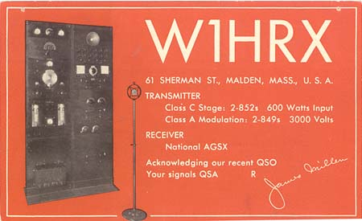

|
By
Arthur H. Lynch, W2DKJ (SK)
This
paper originally appeared in All Wave Radio magazine, February
1937. Pictures referenced in the article are shown under the heading
"W1HRX
Station in the late 30's" elsewhere on this website.
Mr. Lynch's article is a great description of the James Millen
radio shack and surrounding grounds that facilitated his most
active period of amateur radio operations.

QSL
Pictured Source K8CX QSL Directory from K3AMO - Year 1936
In order that you may have a mental
picture of the owner and operator of the station we are about
to describe, it may be desireable to tell you something about
the gentleman himself. His contributions to the radio art are
quite generally recognized in that field but his personal characteristics
are known to only a limited few with whom he comes in contact
in the course of business or with whom he converses on the air.
Of course, for the past three years, the National Company's rather
intimate conversational page, written by Mr. Millen and published
in QST, has given most of us, in the amateur game, some inkling
of his ability and personality, to say nothing of some very valuable
engineering facts.
"Jim," as he is generally known by the radio fraternity
is a very modest, unassuming sort of gentleman who hates hustle
and bustle and noise in a profound fashion. The "M.E."
which follows his name, is a degree which he received from the
Steven's Institute of Technology, at Hoboken, New Jersey. He was
most fortunate in having , amoung his instructors at Steven's
the now famous Professor Hazeltine, of neutrodyne fame, as well
as Professor Vreeland, whose valuable contributions in connection
with band-pass tuning have done so much for high-fidelity radio
reception.
At the time, Jim lived with his mother at Elmhurst, Long Island.
The trek from Elmhurst to Hoboken was in those days, something
which would not be envied by the present-day college man. While
it is generally considered that getting through Steven's is no
cinch, Millen found time to prepare magazine articles which started
appearing in Radio Broadcast . In addition, to his technical
pursuits, he found sufficient time weekends to build for himself,
and with very little help, a bungalow at High Hill Beach, which
is now a part of the famous Jones' Beach State Park. All of the
wood for the bungalow had to be transported by boat from the mainland
to the little dock at High Hill Beach, and from there it was toted
piece-meal to the bungalow's location, a little over a mile away.
After the bingalow was completed, battery-operated radio equipment
was installed and some remarkable results were obtained with extremely
long antennas stretched along the beach.
However, that is an entirely different story and our principal
point in mentioning it is that the owner of the "Paradise"
we are about to describe is a person who has a certain amount
of push, and who understands that only by having such seclusion
is it possible to secure the kind of radio results that all of
us would like to obtain.
The Hilltop Haven
The hilltop on which Mr. Millen's present station is located just
north of Middleton, Massachusetts. It is considerable distance
from either homes and one of the highest spots in the Boston area.
The hilltop is reached by dirt roads which branch off the main
thoroughfare passing a half mile in either direction from the
top of the hill. The dirt roads have the character of mountain
trails and would be ideal for Rocky Mountain goats. Among other
things, the property includes a large sized pond, a very pretty
brook and a pine grove, which puts one in mind of the redwood
tree area in the far west.
The main house is a white colonial, located on a small plateau,
near the top of the hill. It was built 200 years ago and some
of the boards in the floors and the roof are thirty inches wide.
It has been modernized by Mr. Millen and his mother to the extent
of incorporating a most up-to-date bathroom and kitchen. This
modernization has been done so skillfully that the New England
colonial atmosphere of the dwelling has been preserved.
On a clear day, the Customs House, at Boston, some twenty-eight
miles away, may be seen from the front porch. The Porch, too,
provides a view of the excellent swimming pool, some hundred feet
down the slope.
The bungalow, shown in the general view of the hilltop, is the
radio station itself, and is approximately one-hundred yards away
from the main house. The house itself is located to the left of
the bungalow and the swimming pool is located quite close to the
grape arbor which appears in the lower left-hand corner of the
general picture. There is an extension on the side of the bungalow,
not in view in the picture, which has recently been added and
which serves as a bedroom, with twin beds, for the accommodation
of visiting radio amateurs who insist on staying up all hours
to work the rig. The provision of this bedroom in the bungalow
makes it unnecessary for the visiting brass-pounders and voice-throwers
to wake up the remainder of the household when they do decide
to go to bed, and it has the distinct advantage of enabling them
to sleep late in the morning, without being aroused by those who
would care to be about in the main house.
The Antennas
The mast sticking up from the chimney supports a short antenna
which is used for local reception and particularly for operation
on five meters. The large frame-work tower in the center of the
picture and the cumbersome contraption which it supports, reminds
one of the rotary aerial swings that one finds at seaside resorts
and at county fairs. Actually, it is a 20-meter, four element
beam antenna. Signals from this beam have been heard in all parts
of the world.
The original plan for this antenna called for a motor, located
at the top of the tower, to be used for rotating the beam. This
refinement was never completed, however, as the particular stations
with which W1HRX maintains regular schedules can all be worked
from the same orientation of the array. Details concerning the
manner in which the beam antenna has been made are discernable
in the large, close-up picture of the beam itself.
(This close up doesn't appear on this website, but the array is
visable in the bungalow picture - JMS) Two of the elements are feed in phase from a 600-ohm line and
there are two parasitic reflectors behind the radiators.
As is true with every amateur station, each of the important components
here is surrounded by an interesting story. Take, for instance,
the five meter, eight-element beam array shown supported by the
frame-work at the left of the picture. Before this workmanlike
unit appeared, all sorts of makeshift arrangements, of the same
general dimensions, were tried and found to be practically useless.
The headquarters staff of QST wanted to carry on some experimental
work, in connection with long-distance transmission on five meters.
Millen's hilltop is about 128 miles from Hartford and it was thought
that this distance would be ideal for the experiments. Accordingly,
after the preliminary aerial had been abandoned, the unit shown
in the picture was built. The results obtained with this antenna
are now well known to nearly every amateur, and consistent day
and night transmissions between this beam and a similar unit installed
at Hartford were carried on for over a year.
Headaches
While W1HRX now appears to be close to ideal it must not be thought
that this station has come into being without any of the aggravating
circumstances which the rest of us encounter. A very severe headache
was caused during the construction of the lattice work mast which
appears prominently in the general view of the station. The four
corner supports are made of 4 by 4 pine joists in a single length.
It was found that units of this size, 34 feet long, could be obtained
at a local lumber yard. Operating on the basis of this length,
complete drawings for the entire tower were made. Later, a piece
of lumber, 38 feet long, and measuring 8 by 8, was located. At
no small cost, it was cut up into four pieces, 4 by 4 and 38 feet
long. Millen was perfectly willing to pay the premium for the
additional four feet of height. On his arrival to the "farm"
that evening you can imagine his distress when he found four pieces
of 4 by 4, four feet long, lying on the barn floor. He
was advised that the carpenter had cut them off the long length
so that the tower would coincide with the drawings which had been
made.
Even after this catastrophe, troubles continued to hover about.
It was difficult to secure a supporting member for the vertical
radiator which would have the dual characteristics of strength
and lightness. Ultimately, after a two weeks wait, four 30 foot
bamboo poles were secured in New York, and it must be said that
30-foot bamboo poles are not especially easy to find. Nor is it
easy to ship then without having them broken, after they have
been found.
The Station
Two thoughts guided the securing of the "Hilltop" which
is now so well known to most amateurs as Radio Station W1HRX.
One was Millen's desire to secure a summer retreat, where his
friends could be suitably entertained and where a reasonable degree
of privacy could be had. The second and perhaps the more important
reason was that he is a firm believer in the policy of giving
everything a very thorough trial under severely practical conditions,
and he wanted a place where new ideas and new equipment could
be put through their paces unhurriedly.
Nearly all of the equipment carried in the right-hand relay rack,
shown in the corner of the operating room, is useful for receiving
only. Certain tricks in this layout, however, are not immediately
apparent. The power supply for the exciters is located at the
base of the relay rack, in such a position that the operator can
throw the toggle switch on and off with his foot without reaching
down. Provision of a wooden shelf, directly beneath the receiver,
eliminates the necessity for an extra table or a desk for operating
purposes. It will be observed that the log, key and microphone
are right at the operator's elbow. The space between this shelf
and the top of the power supply was formerly occupied by nothing
but blank panels. By the simple expedient of employing a few metal
shelves which are attached directly to the relay rack, which was
formerly dead space, makes all of the necessary equipment immediately
available and at the same time provides a place for ash trays,
tall glasses, etc., where they'll not be easily upset.
The power lines do not reach this station. In order to energize
the rather powerful equipment which is used here, it is therefore
necessary to generate power on the hilltop. Several power plants
are available. A "Windcharger" was mounted on the peak
of the barn roof about two years ago and it has been doing active
duty ever since. It takes care of some of the emergency lighting
in the main house by keeping a bank of storage batteries, located
in the barn, fully charged at all times. These storage batteries
are also used for starting the gasoline engine which drives the
intermediate power supply and which is located a considerable
distance away from the house. This gas engine drives an alternator
which is used for light and for operation of one of the lower
powered transmitters. It is also employed in connection with a
pump, used to draw water from a spring and pump in into a huge
tank located directly behind the barn.
In addition to the transmitter shown in one of the accompanying
pictures, another and very much more powerful unit is located
in another corner of the room and is link-coupled to the transmitter
shown here. With this higher powered final amplifier it is possible
for the station to be run to the full legal limit.
The installation of the gasoline-driven generator, which is located
just outside the windows in the operating room, was a task of
no mean proportions, in spite of the fact that Millen had the
very valuable assistance of Fred Davis, who is the General manager
of the Rumford Press, among whose tasks are the printing and distriburtion
of the Reader's Digest. The very important work of assisting
in attaching the fireproof covering for the gas engine into the
operating room, were delegated to Davis and your present reporter. |